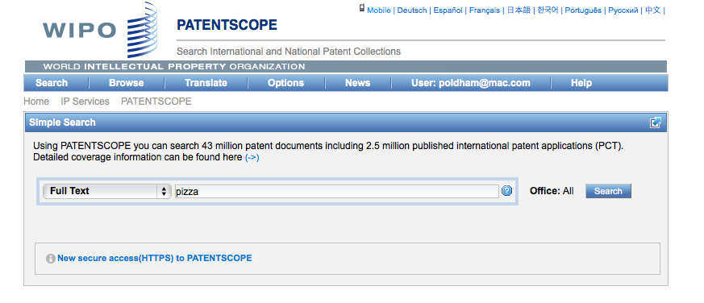
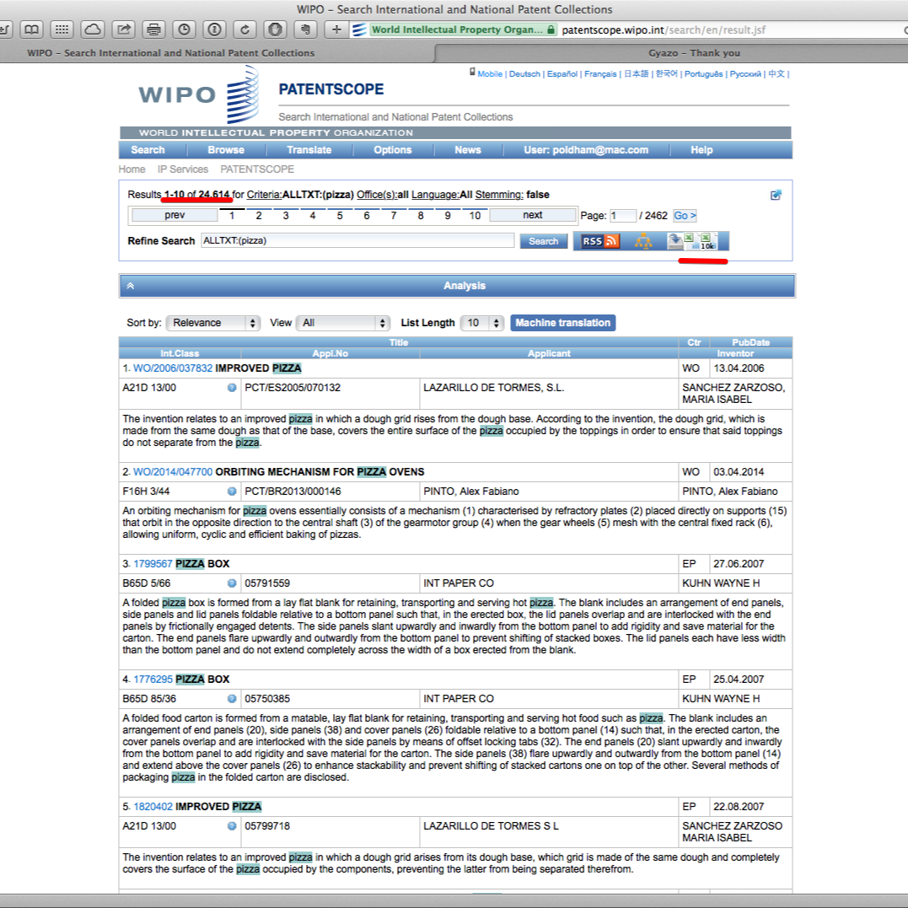

Chapter 7 Patentscope
##Introduction
Patentscope is the WIPO public access database. It includes coverage of the Patent Cooperation Treaty applications (administered by WIPO) and a wide range of other countries including the European Patent Office, USPTO and Japan totalling 51 million patent documents including 2.8 million PCT applications.
In this article we cover the basics of using Patentscope to search for and download up to 10,000 records. A detailed User’s Guide provides more details on specific features. A set of video tutorials are also available. When compared with other free services Patentscope has the following main strengths.
- Full text search in the description and claims of PCT applications on the day of publication and patent applications from a wide range of other countries including the United States, Japan, China and the European Patent Office among others.
- Download up to 10,000 records
- Expand search terms into multiple other languages using
Cross Lingual Expansionor CLIR - Simple, Advanced and Combined Field searching
- Accessible in multiple languages and a WIPO Translate text function
- Mobile version and https: access
- Sequence listing downloads
- Green technologies through the IPC Green Inventory
- Different types of graphical analysis of results lists on the fly using the Options menu.
To get the most out of Patentscope it is a good idea to consult the two detailed guides and the video tutorials:
- Patentscope Search: The User’s Guide.
- Patentscope CLIR for the Cross-Lingual Information Retrieval Tool here.
- Patentscope video tutorials
If you would like to download patent or sequence data you will need to register for a free account. To register for a free account go here.
##Collections to Search
Perhaps the best place to start is with the collections we will be searching. Those can be accessed under the Options menu on the main menu and then the tab reading office.

We can see here that Patentscope provides access to the Patent Cooperation Treaty collection, regional collections such as the ARIPO and the European Patent Office and national collections such as the United States, Japan and Others. The ability to search and retrieve data from the LATIPAT collection will be particularly useful for researchers in Latin America and could be linked to analysis using the espacenet version of LATIPAT. If you are only interested in particular collections, this is the place to change the settings.
##Simple Search
We can select a range of different fields for search. In this case we have selected full text from the drop down menu for a simple search on the term pizza.

Note that Patentscope groups documents for the same application into a record or dossier and that we are seeing the document that is the key for the record. The other documents in the dossier for the record can be accessed by clicking the document number and selecting the Documents menu as in this example.
For more details on using simple search see the Simple Search video tutorial. Videos are also available on the use of Field Combinations for constructing searches and Advanced Search.
##Results
When we arrive at the results page we can see that we have 24,614 results with our query displaying as searching AllTXT and all languages. We then have an RSS button to copy the feed over to an RSS feeder for updates.

There is also a query tree button that displays results by language and terms in the relevant sections of the document. We can see an example of this for a more complex query below.

A video tutorial is also available for the Search result list
##Downloading Results
The two excel icons at the end of the menu allow a user to download either the short list (first icon) or the second list as a .xls file. To see these icons you must be logged in with a user account or they will not display.

When we download these results we will receive an .xls sheet with up to 10,000 entries with a couple of header rows that show the query. Note that each record in the Excel sheet is hyperlinked to the corresponding record in Patentscope.

We will go into the use of this data, including with Tableau Public and other tools, in some depth and there are a few things to note here. The first is that the hyperlinked publication number does not possess a kind code (A1, B1 etc.). This only matters in the sense that the number will retrieve multiple documents in other databases linked to the Patentscope number. A second point to note is that Patentscope data is raw in the sense that it is data as it comes from the data providers and is not processed. That means that there can be encoding issues that we will come back to later on in the discussions on data cleaning.
What is very useful about Patentscope is that we can actually obtain quite a significant volume of data on a topic of interest. While this article has simply downloaded the first 10,000 results, to obtain the full result set it would be easy enough to limit the data by year and download the data as a series of sets that can be combined later (e.g. three sets).
To do this we need to visit the Field Combination Page. Here we will start by putting our query in English All to gain the total number of results. Then we will restrict the data by the publication data field using [] and period between dates (as DD.MM.YYYY). An example is shown below.

This will helpfully show the total results for the query (although it can take some time) and we can run and then download results for each year limited segment.
When working with multiple downloads it is a good idea to write down the total number of results and then the results for each date limited segment to ensure that the data adds up to what you would expect. Some experimentation may also be needed with the field settings using the Boolean AND/OR operators.
##Cross Lingual Searching
One challenge in patent searching is the use of different expressions in different languages for the same query. Patentscope presents a very useful solution to this through cross-lingual searching. From the pull down menu select Cross Lingual Expansion, then enter the search terms and press go. The tool will now generate search terms in multiple languages.

To go further with this tool use either the slider settings (precision vs. recall). For example, if we were to insert the search term “synthetic biology” and move recall to the top level (4), we would generate the following query.
"FP:((EN_TI:("synthetic biology" OR "biologic synthetic") OR EN_AB:("synthetic biology" OR "biologic synthetic")) OR (DE_TI:("synthetische Biologie" OR "synthetischen biologischen" OR "biologische synthetische" OR "Biologische synthetische") OR DE_AB:("synthetische Biologie" OR "synthetischen biologischen" OR "biologische synthetische" OR "Biologische synthetische")) OR (ES_TI:("biológicas sintéticas") OR ES_AB:("biológicas sintéticas")) OR (FR_TI:("biologie synthétique" OR "biologie synthéthique") OR FR_AB:("biologie synthétique" OR "biologie synthéthique")) OR (JA_TI:("生物合成" OR "合成生体" OR "の生物学的合成") OR JA_AB:("生物合成" OR "合成生体" OR "の生物学的合成")) OR (ZH_TI:("合成生物") OR ZH_AB:("合成生物")))"
If supervised mode is selected from the Expansion mode drop down, it becomes possible to select technology areas for the generation of terminology. While we haven’t worked through this in detail that could be very helpful for domain specific query generation. All in all, this is one of the most original and powerful tools that Patentscope has to offer. A detailed .pdf guide to using CLIR is available here.
##Sequence Data
A third major feature of Patentscope is access to DNA and amino acid sequence listings filed with PCT Applications. This data can be accessed and downloaded for individual records here.

A sample record from the lists can be seen below as a plain text file. Note that some issues may arise with reconciling the plain text file with the WIPO publication number (WO etc.) and this merits careful attention if using this data.

Registered account holders can also use the ftp anonymous download service from the same page. This provides access to the sequence data by year as can be seen below.

If using the anonymous ftp service note that the recent data is measured in gigabytes, so do not try to download this data over a weak WIFI connection, a gated connection or to your phone(!). Nevertheless, the open accessibility of this data is important. For other sequence data sources you may be interested in the European Bioinformatics Institute resources here and for the US by document number here and until March 2015 at the DNA Patent Database here. Also important is the Lens Patseq tool here.
##Round Up
WIPO Patentscope is a powerful tool for gaining access to a significant amount of patent data on a topic of interest. The ability to download 10,000 or more records at a time cannot be beaten by other free tools. The Cross Lingual Searching tool appears to be unique and valuable. Free access to bulk download of sequence data is likely to keep bioinformaticians happy for quite a long time.
One way of thinking about the role of Patentscope in patent analytics is as a resource that can be combined with other data tools. For example, if we wanted to obtain the abstracts, descriptions or claims of PCT documents in Patentscope then we might use the Patenscope numbers to retrieve data from EPO Open Patent Services or Google Patents using R or Python or other tools. That is, in this case Patentscope overcomes the limitations of search results from other tools but allows for the targeted use of other tools to retrieve more information. The Cross Lingual Searching tool could also be particularly useful for trying to identify and later acquire patent documents from other jurisdictions where a company or organisation may be seeking to operate or to expand patent landscape analysis into jurisdictions with non-Roman alphabets.
The main difficulties that arise from using Patentscope can stem from occasional noise in the data. Patenscope does not clean the data provided from the individual collections with the exception of checking for typological errors in priority numbers and IPC codes. In addition, all text is transformed into UTF-8. However, as is common when dealing with diverse data sources, the results are not always perfect. In addition, because Patentscope data is drawn from a wide range of languages users may need to update their font libraries if large numbers of unusual characters appear in the data (such as installing the Asian language pack for Windows). In practice, as is common with most patent data sources, this can mean significant time is required to clean up the data. Having said this, no other free database tool allows us to download as much data in table form for analysis. As we will see, it is possible to do a lot with Patentscope data.